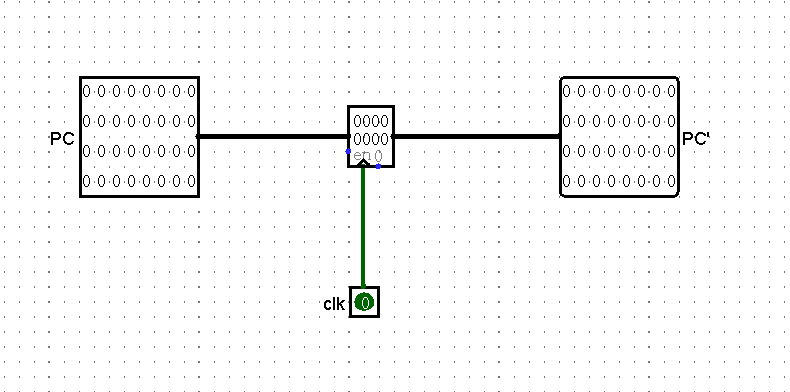
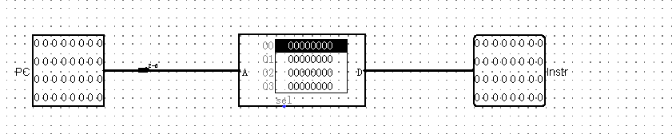
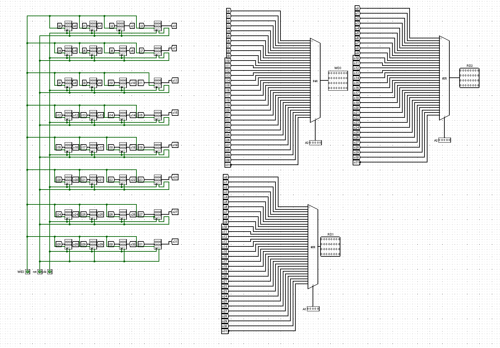
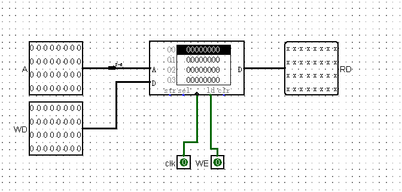
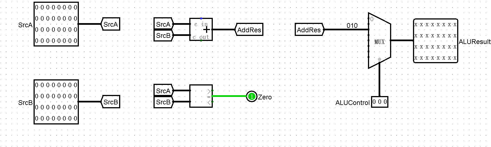
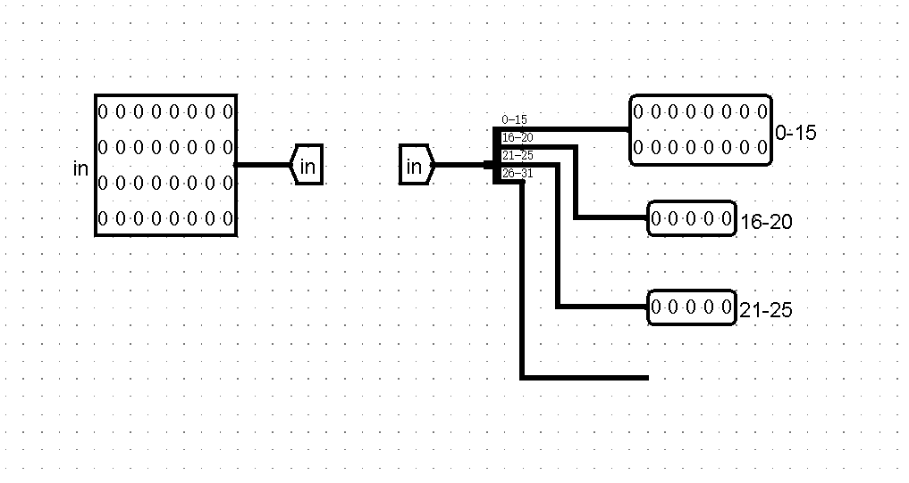
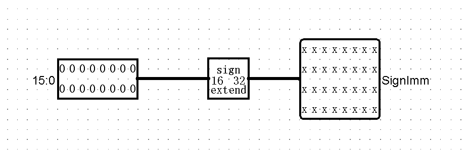
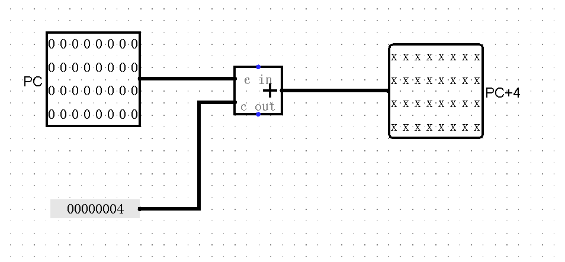
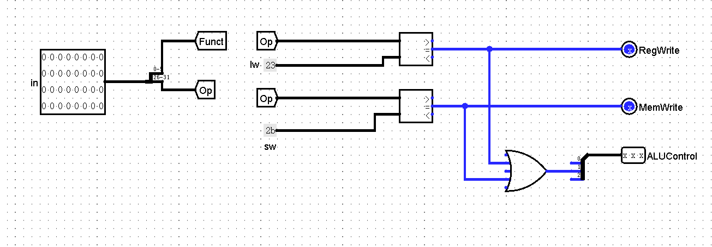
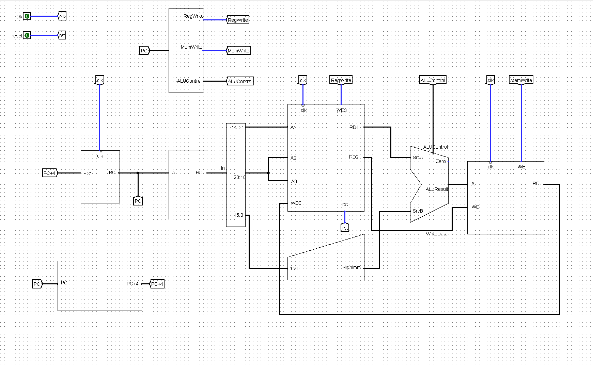

本文最后更新于 2024年9月12日 下午
构建单周期CPU记录Ⅰ(初步,包括lw和sw)
核心部件
PC(Program Counter,程序计数器)

image-20240911170903742
IM(Instuction
Memory,指令存储器)

image-20240911200511537
GRF(Register File,寄存器文件)

image-20240911200549683
DM(Data Memory,数据存储器)

image-20240911200524349
附加部件
ALU

image-20240911200643385
SPLT(splitter,分离器)

image-20240911200703680
EXT(extender,扩位器)

image-20240911200729925
NXTAD(Next
Address,下一个地址的计算器)

image-20240911200825778
信号控制分析
信号表
| 指令 |
RegWrite |
ALUControl[2:0] |
MemWrite |
| lw |
1 |
010 |
0 |
| sw |
0 |
010 |
1 |
|
|
|
|
|
|
|
|
信号说明
RegWrite
连接WE3端口
1:将数据写入寄存器
0:没有写入寄存器文件的数据
ALUControl
MemWrite
CU
据此,我们可以搭建一个初步的信号控制
lw:100011(31:26) + rs(25:21) + rt(20:16) + offset(15:0)
sw:101011 (31:26) + rs(25:21) + rt(20:16) + offset(15:0)

image-20240911203252095
整体

image-20240911203327623
附
使用Python批量构造代码
1
2
3
4
5
6
7
8
9
10
11
12
13
14
15
16
17
18
19
20
21
22
23
| s ="""
<comp lib=\"4\" loc=\"(Y_,Z_)\" name=\"Register\">
<a name=\"width\" val=\"32\"/>
</comp>
<comp lib=\"0\" loc=\"(T_,Z_)\" name=\"Tunnel\">
<a name=\"facing\" val=\"east\"/>
<a name=\"width\" val=\"32\"/>
<a name=\"label\" val=\"iX_\"/>
</comp>
<comp lib=\"0\" loc=\"(Y_,Z_)\" name=\"Tunnel\">
<a name=\"width\" val=\"32\"/>
<a name=\"label\" val=\"oX_\"/>
</comp>
"""
Y, Z = 90, 30
for X in range(0, 32):
Y += 80
T = Y-30
print(s.replace("Y_",str(Y)).replace("T_", str(T)).replace("X_",str(X)).replace("Z_",str(Z)))
|
1
2
3
4
5
6
7
8
9
10
11
12
13
14
15
| s = """<comp lib=\"0\" loc=\"(80,H_)\" name=\"Tunnel\">
<a name=\"facing\" val=\"east\"/>
<a name=\"width\" val=\"32\"/>
<a name=\"label\" val=\"iX_\"/>
</comp>
<comp lib=\"0\" loc=\"(130,H_)\" name=\"Tunnel\">
<a name=\"width\" val=\"32\"/>
<a name=\"label\" val=\"oX_\"/>
</comp>
"""
H = 10
for x in range(32):
H += 20
print(s.replace("H_",str(H)).replace("X_",str(x)))
|